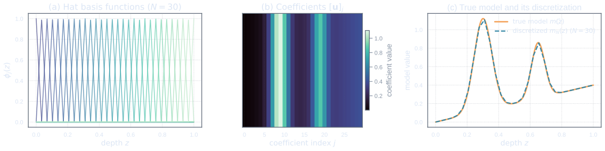
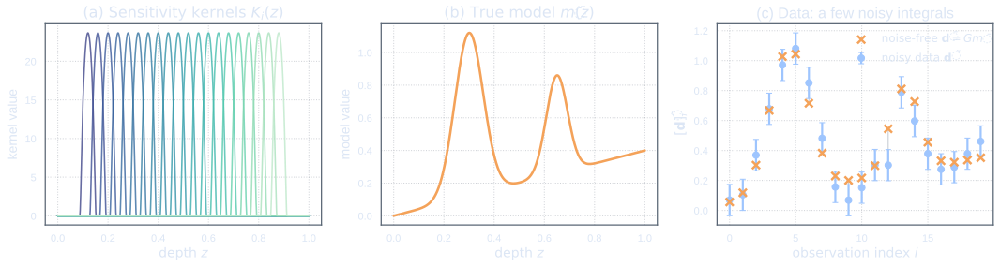
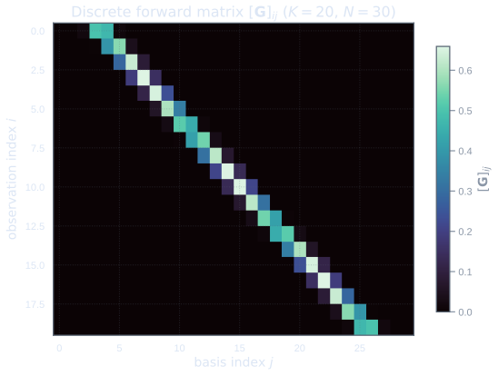
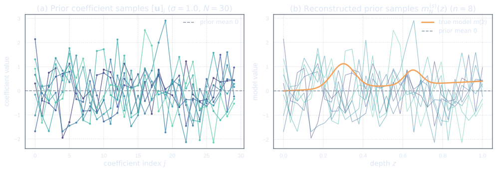
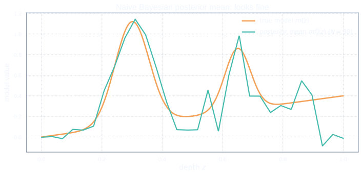

A Simple Inverse Problem
The continuous story we have not yet taken seriously
We begin with a deliberately modest inverse problem. There is an unknown object, which we call the model, and there are finitely many noisy observations of that model. The observations do not reveal the model directly. Instead, each datum is obtained by applying a known measurement rule to the model and then corrupting the result with noise.
At first, we will treat this problem in the most computationally convenient way: we will discretize the model immediately, represent it using basis functions, turn the forward map into a matrix, and compute a finite-dimensional Gaussian posterior. This is the obvious route. It is also the route that will eventually betray us.
The purpose of this first act is not to do things correctly. The purpose is to do something plausible, watch it appear to work, and then prepare the stage for the moment when the cracks start to show.
The unknown model
Let the physical domain be an interval \[ \Omega = [0,L]. \] The unknown model is a function \[ m : \Omega \to \R. \] For example, \(m(x)\) might describe a material property as a function of depth, position, or time. At this stage we will not ask too carefully what kind of function \(m\) is allowed to be. Is it continuous? Square-integrable? Smooth? Does it satisfy boundary conditions? Does it have derivatives?
For now, we only say \[ m \in \text{some space of functions on } \Omega. \]
This vagueness is intentional. It reflects the way many inverse problems first appear in practice. We know that there is a function we want to infer, and we know that our data depend on it. The exact mathematical home of that function is often postponed until later.
The phrase "some space of functions" is not harmless. It is a modelling choice waiting to happen. If we do not make it explicitly, the discretization will make it for us.
The observations
Suppose we have \(K\) observations, \[ [\obs]_1,\ldots,[\obs]_K \in \R. \] We collect them into a data vector \[ \obs = \begin{pmatrix} [\obs]_1 \\ \vdots \\ [\obs]_K \end{pmatrix} \in \R^K. \]
Each observation is a noisy measurement of the unknown function. A typical example has the form \[ [\obs]_i = \int_{\Omega} K_i(x)\,m(x)\,dx + [\noise]_i, \qquad i=1,\ldots,K, \] where \(K_i\) is a known sensitivity kernel and \([\noise]_i\) is observational noise.
The sensitivity kernel \(K_i\) tells us which parts of the model influence the \(i\)th datum. If \(K_i\) is concentrated near some point, then the datum is mostly sensitive to the model near that point. If \(K_i\) is broad, then the datum blends information over a wider region.
Each datum is a weighted average of the model, plus noise. The kernels \(K_i\) are the weights. They decide what the experiment can see and what it must leave hidden.
The forward operator
We define the forward operator \[ G : \M \to \R^K \] componentwise by \[ [G(m)]_i = \int_{\Omega} K_i(x)\,m(x)\,dx, \qquad i=1,\ldots,K. \] Here \(\M\) denotes the model space, although we have not yet chosen it carefully. This is one of the central tensions of the story: we already know how to write down the measurements, but we have not yet decided what mathematical universe the unknown belongs to.
The map \(G\) is linear: \[ G(\alpha m_1 + \beta m_2) = \alpha G(m_1) + \beta G(m_2), \] for scalars \(\alpha,\beta \in \R\) and models \(m_1,m_2 \in \M\).
This linearity is important. It means that we are studying a linear inverse problem. The difficulty will not come from nonlinearity. The difficulty will come from a quieter source: the interaction between infinite-dimensional unknowns, finite-dimensional data, priors, and discretization.
We adopt the following typographic conventions throughout these notes.
- Finite-dimensional objects. Boldface letters denote finite-dimensional vectors and matrices (coefficient/representation objects). For example \(\mathbf{v}\in\R^N\) and \(\mathbf{A}\in\R^{N\times N}\).
- Infinite-dimensional objects. Non-bold (lightface) letters denote infinite-dimensional operators or functions acting on the model Hilbert space \(\M\); e.g.\ \(G:\M\to\D\), \(C_0:\M\to\M\).
- Components / entries. The components of a vector or the entries of a matrix are written with square brackets and subscripts: \([\mathbf v]_i = v_i\), \([\mathbf A]_{ij} = A_{ij}\). When an object is represented in a particular basis \(\{\phi_k\}_{k=1}^N\) we always mean the coordinates with respect to that basis.
- Adjoints and transposes. We reserve \(^{\top}\) for the Euclidean transpose of a finite matrix and \(^{*}\) for the Hilbert adjoint of an operator. Discrete adjoints that incorporate mass/weight matrices will be written explicitly.
- Infinite sequences. When working with infinite coefficient sequences we use index notation \((\alpha_i)_{i\ge1}\); for finite coefficient vectors we write \(\mathbf\alpha=(\alpha_1,\dots,\alpha_N)^{\top}\) so that \([\mathbf\alpha]_i=\alpha_i\).
- Bar and tilde. A bar denotes the true model: \(\bar{m}\) is the true model, \(\bar{\mathbf{d}}=G\bar{m}\) is the noise-free data. A tilde denotes posterior or observed quantities: \(\tilde{\mathbf{d}}\) is the observed data, \(\tilde{m}_N^{\obs}\) is the posterior mean function, \(\tilde{\mathbf{u}}_N^{\obs}\) are the posterior mean coefficients.
Gaussian observational noise
We assume that the noise vector \[ \noise = \begin{pmatrix} [\noise]_1 \\ \vdots \\ [\noise]_K \end{pmatrix} \] is Gaussian: \[ \noise \sim \N(0,\Cd), \] where \(\Cd \in \R^{K \times K}\) is symmetric positive definite.
The covariance matrix \(\Cd\) encodes the size and correlation structure of the observational errors. If \[ \Cd = \sigma_D^2 \mathbf{I}_K, \] then the noise components are independent and have the same variance \(\sigma_D^2\). More generally, off-diagonal entries of \(\Cd\) allow different data errors to be correlated.
Thus, the data model is \[ \obs = G(m) + \noise, \qquad \noise \sim \N(0,\Cd). \]
The inverse problem in its most innocent form
The data equation
The inverse problem begins with the equation \[ \obs = G m + \noise. \] Here \[ \obs \in \D, \qquad m \in \M, \qquad \noise \sim \N(0,\Cd), \] where, for this first example, \[ \D = \R^K. \]
This equation is compact, but it contains almost the entire drama. The unknown \(m\) belongs to a function space. The data \(\obs\) belong to a finite-dimensional space. The forward map \(G\) compresses a function into finitely many numbers. Noise is then added.
The inverse problem asks us to travel in the opposite direction: \[ \obs \quad \leadsto \quad m. \] But the arrow is not reversible. Many different functions can give essentially the same data, especially once noise is present.
What we want to infer
In a deterministic inverse problem, we might ask for a single best model \(m^\dagger\) satisfying \[ G m^\dagger \approx \obs. \] In a Bayesian inverse problem, we ask for something richer: a probability distribution over possible models after observing the data.
That is, we want the posterior measure \[ \post = \mathbb{P}(m \in \cdot \mid \obs). \]
This posterior should tell us not only which models fit the data well, but also how uncertain we remain. The posterior mean may summarize the central tendency, but the posterior covariance, credible intervals, and samples reveal the spread.
The output of a Bayesian inverse problem is not just a curve. It is a probability measure on possible curves.
Why the problem is indirect
The difficulty is that the data are finite and indirect. Each datum is only a projection, average, or blurred measurement of the model. If the model is a function, then it has infinitely many degrees of freedom, while the data vector has only \(K\) components.
Even before noise enters, the equation \[ \obs = G m \] usually has many solutions or no exact solution. With noise, exact equality is not the right goal anyway. Instead, we must combine three ingredients:
- the information supplied by the data;
- the uncertainty in the observations;
- prior information about plausible models.
The Bayesian framework gives us a systematic way to combine these ingredients. But only if the ingredients themselves are chosen coherently.
The data do not show us the model directly. They show us shadows of the model cast through the forward operator.
Discretizing First
Choosing hat functions
Now we take the computational shortcut. Instead of first deciding what the function space \(\M\) really is, we immediately introduce a finite-dimensional basis. This is natural, practical, and familiar. It is also the seed of the problem.
A mesh on the physical domain
Let \[ 0 = x_1 < x_2 < \cdots < x_N = L \] be a mesh on \(\Omega = [0,L]\). For simplicity, we may imagine a uniform mesh with spacing \[ h = \frac{L}{N-1}. \]
The mesh converts the continuous domain into finitely many nodes. We will represent the unknown model by its coefficients relative to basis functions associated with these nodes.
Piecewise-linear basis functions
Let \[ \{\phi_j\}_{j=1}^N \] be the standard piecewise-linear hat functions associated with the mesh. Thus \[ \phi_j(x_i) = \delta_{ij}, \] and each \(\phi_j\) is supported only near the node \(x_j\).
The hat functions form a basis for the finite-dimensional space \[ \M_N = \operatorname{span}\{\phi_1,\ldots,\phi_N\}. \] Every function in \(\M_N\) is continuous and piecewise linear.
At this point, the discretization feels like a harmless approximation. We are not solving for an arbitrary function anymore. We are solving for a function inside \(\M_N\).
The finite-dimensional approximation
We write \[ m_N(x) = \sum_{j=1}^{N} [\mathbf{u}]_j \phi_j(x). \] The unknown function has now been replaced by the coefficient vector \[ \mathbf{u} = \begin{pmatrix} [\mathbf{u}]_1 \\ \vdots \\ [\mathbf{u}]_N \end{pmatrix} \in \R^N. \]
The coefficient \([\mathbf{u}]_j\) controls the amplitude of the \(j\)th hat function. Since \(\phi_j(x_i)=\delta_{ij}\), for nodal hat functions the coefficient \([\mathbf{u}]_j\) is also the value of the approximate function at node \(x_j\): \[ m_N(x_j) = [\mathbf{u}]_j. \]
This makes the representation easy to interpret. It also quietly encourages us to think of \(\mathbf{u}\) as the actual unknown, rather than as a coordinate vector representing a function.
A coefficient vector is not the same thing as a function. The vector \(\mathbf{u}\) becomes a function only after we choose the basis that interprets it.


Turning the forward map into a matrix
Data predicted by basis functions
For each basis function \(\phi_j\), we can compute its contribution to each datum: \[ [\Gb]_{ij} = G_i \phi_j. \] In the integral-kernel example, this means \[ [\Gb]_{ij} = \int_{\Omega} K_i(x)\,\phi_j(x)\,dx. \]
Therefore, if \[ m_N(x) = \sum_{j=1}^{N} [\mathbf{u}]_j\phi_j(x), \] then linearity gives \[ [G(m_N)]_i = \sum_{j=1}^N [\mathbf{u}]_j G_i\phi_j = \sum_{j=1}^N [\Gb]_{ij}[\mathbf{u}]_j. \] In vector form, \[ G(m_N) = \Gb\mathbf{u}, \] where \[ \Gb \in \R^{K \times N}. \]

The naive matrix problem
The continuous-looking inverse problem has now become the finite-dimensional linear model \[ \obs = \Gb \mathbf{u} + \noise, \] with \[ \noise \sim \N(0,\Cd). \]
This is a standard Bayesian linear regression problem. Everything appears to be finite-dimensional. Everything appears to be familiar. We have a design matrix \(\Gb\), unknown coefficients \(\mathbf{u}\), data \(\obs\), and Gaussian noise.
At this stage, it is tempting to forget the function \(m\) entirely and simply declare victory over the infinite-dimensional problem. The beast has been put in a matrix-shaped cage.
But we will soon find out the beast cannot be contained — it is after all an infinite-dimensional beast.
A Gaussian prior on coefficients
The tempting choice
To complete the Bayesian formulation, we need a prior distribution on the unknown coefficients. The most tempting choice is \[ \mathbf{u} \sim \N(0,\sigma^2 \mathbf{I}_N). \] Equivalently, \[ \mathbf{C}_N = \sigma^2 \mathbf{I}_N. \]
This says that the coefficients are independent, centred Gaussian random variables: \[ [\mathbf{u}]_j \sim \N(0,\sigma^2), \qquad j=1,\ldots,N, \] with no prior correlation between different nodes.
More generally, we may allow a nonzero prior mean \[ \mathbf{u}_0 \in \R^N \] and write \[ \mathbf{u} \sim \N(\mathbf{u}_0,\mathbf{C}_N). \] For the naive example, however, the important case is \[ \mathbf{C}_N = \sigma^2 \mathbf{I}_N. \]
Why this looks reasonable at first glance
The prior \(\N(0,\sigma^2 \mathbf{I}_N)\) looks reasonable for several reasons.
First, it is simple. It introduces only one scale parameter, \(\sigma\), which controls the typical size of the coefficients.
Second, it is symmetric in the coefficients. No node is preferred over any other node.
Third, it is computationally convenient. The covariance matrix is diagonal, easy to store, easy to invert, and easy to sample from.
Fourth, it resembles a familiar finite-dimensional default: when we do not know much about a vector, we often place an isotropic Gaussian prior on it.
These arguments are not silly. In a genuinely finite-dimensional problem, they may be defensible. The trouble begins when this prior is used as a stand-in for a probability distribution over functions and then carried through mesh refinement.
A diagonal prior says that every coefficient is allowed to wiggle independently. As the mesh becomes finer, we add more wiggles. Unless their size is controlled in a way that depends on the function space, the wiggles do not politely vanish. They accumulate.

The naive posterior
Finite-dimensional Gaussian conditioning
We now have the finite-dimensional Bayesian linear model \[ \mathbf{u} \sim \N(\mathbf{u}_0,\mathbf{C}_N), \] and \[ \obs\mid \mathbf{u} \sim \N(\Gb\mathbf{u},\Cd). \]
Because both the prior and the noise are Gaussian, the posterior distribution of \(\mathbf{u}\) given \(\obs\) is also Gaussian: \[ \mathbf{u}\mid \obs \sim \N(\tilde{\mathbf{u}}_N^{\obs},\mathbf{C}_N^{\obs}). \]
This is one of the great computational conveniences of linear Gaussian inverse problems. The posterior is available in closed form. No sampling method is needed to obtain the posterior mean or covariance.
Posterior covariance
The posterior covariance is \[ \mathbf{C}_N^{\obs} = \mathbf{C}_N - \mathbf{C}_N \Gb^{\T} \left( \Gb \mathbf{C}_N \Gb^{\T} + \Cd \right)^{-1} \Gb \mathbf{C}_N. \]
The matrix \[ \Gb \mathbf{C}_N \Gb^{\T} + \Cd \] is the covariance of the predicted data, including both prior uncertainty pushed through the forward model and observational noise.
The term \[ \mathbf{C}_N \Gb^{\T} \left( \Gb \mathbf{C}_N \Gb^{\T} + \Cd \right)^{-1} \Gb \mathbf{C}_N \] is the amount of prior covariance removed by observing the data. In directions where the data are informative, the posterior uncertainty shrinks. In directions that the data cannot see, the posterior remains close to the prior.
This last sentence is the fuse. If the prior is badly behaved in the unseen directions, then the posterior inherits that bad behaviour.
Posterior mean
The posterior mean is \[ \tilde{\mathbf{u}}_N^{\obs} = \mathbf{u}_0 + \mathbf{C}_N \Gb^{\T} \left( \Gb \mathbf{C}_N \Gb^{\T} + \Cd \right)^{-1} \left( \obs - \Gb\mathbf{u}_0 \right). \]
The term \(\obs - \Gb\mathbf{u}_0\) is the data residual relative to the prior mean. The operator \[ \mathbf{C}_N \Gb^{\T} \left( \Gb \mathbf{C}_N \Gb^{\T} + \Cd \right)^{-1} \] maps this residual back into coefficient space.
For the zero-mean isotropic prior \(\mathbf{C}_N=\sigma^2 \mathbf{I}_N\), this becomes \[ \tilde{\mathbf{u}}_N^{\obs} = \sigma^2 \Gb^{\T} \left( \sigma^2 \Gb\Gb^{\T} + \Cd \right)^{-1} \obs. \]
Everything here is finite-dimensional and computable. We can assemble \(\Gb\), choose \(\mathbf{C}_N\) and \(\Cd\), compute the posterior mean, and reconstruct a function from the coefficient vector.
The first plot: it looks fine
Reconstructing the posterior mean
Once the posterior mean coefficients \(\tilde{\mathbf{u}}_N^{\obs}\) are computed, we convert them back into a function: \[ \tilde{m}_N^{\obs}(x) = \sum_{j=1}^N \tilde{u}_{N,j}^{\obs} \phi_j(x). \]
This reconstructed posterior mean is the curve we would naturally plot against the true model. It is smooth enough to look respectable, flexible enough to follow the main features of the truth, and stable enough that nothing appears obviously broken.
In a practical workflow, this is often the first moment of relief: the code runs, the matrix dimensions agree, the posterior mean has the right shape, and the curve seems to pass the eye test.

Comparing the mean with the truth
Suppose the true model is \(m_{\mathrm{true}}\). Then the synthetic data are generated by \[ \obs = G m_{\mathrm{true}} + \noise. \] After computing \(\tilde{m}_N^{\obs}\), we compare \[ \tilde{m}_N^{\obs}(x) \quad \text{with} \quad m_{\mathrm{true}}(x). \]
If the observations are informative enough and the noise level is moderate, the posterior mean may recover the broad features of the truth. Peaks may appear in approximately the right places. Long-wavelength structure may be captured. The result may look scientifically plausible.
This is the dangerous part. The posterior mean can look sensible even when the posterior distribution is not.
The false comfort of a plausible curve
The posterior mean is only one summary of the posterior. It does not tell us whether typical posterior samples are reasonable. It does not tell us whether posterior uncertainty is controlled under mesh refinement. It does not tell us whether the finite-dimensional posterior is approaching a meaningful infinite-dimensional object.
A plausible mean can therefore hide a pathological posterior.
The reason is simple: the data constrain only a finite number of directions. If the number of basis functions \(N\) is larger than the number of observations \(K\), then there are directions in coefficient space that are weakly constrained or entirely invisible to the data. In those directions, the posterior covariance is controlled mostly by the prior. If the prior was chosen without reference to a continuous function-space model, there is no reason to expect that uncertainty to behave sensibly as \(N\) increases.
At this stage, the posterior mean may look acceptable. The trap is that a reasonable-looking mean can hide an unreasonable posterior measure.
What we have done so far
Let us summarize the naive workflow.
- We began with an unknown function \(m\) on a domain \(\Omega\).
- We introduced data through a linear forward map \(G\).
- We discretized the model immediately using hat functions.
- We replaced the function \(m\) by coefficients \(\mathbf{u}\).
- We replaced the forward operator by a matrix \(\Gb\).
- We placed a Gaussian prior directly on the coefficients.
- We computed the finite-dimensional Gaussian posterior.
- We reconstructed and plotted the posterior mean.
Nothing in this list looks outrageous. That is precisely why the example is useful. The mistake is not dramatic. It does not announce itself by crashing the code or producing nonsense immediately. It hides behind a plausible curve.
The first act ends with a posterior mean that looks alright. The second act begins by asking what the posterior itself is doing.